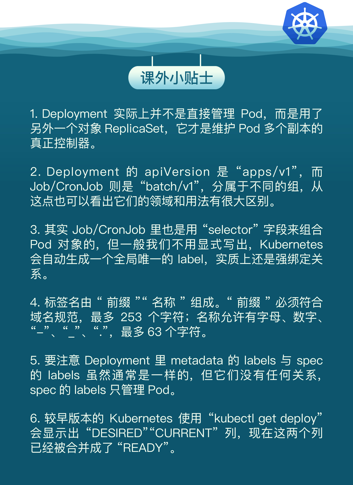

- 00 开篇词 迎难而上，做云原生时代的弄潮儿.md.html
- 00 课前准备 动手实践才是最好的学习方式.md.html
- 01 初识容器：万事开头难.md.html
- 02 被隔离的进程：一起来看看容器的本质.md.html
- 03 容器化的应用：会了这些你就是Docker高手.md.html
- 04 创建容器镜像：如何编写正确、高效的Dockerfile.md.html
- 05 镜像仓库：该怎样用好Docker Hub这个宝藏.md.html
- 06 打破次元壁：容器该如何与外界互联互通.md.html
- 07 实战演练：玩转Docker.md.html
- 08 视频：入门篇实操总结.md.html
- 09 走近云原生：如何在本机搭建小巧完备的Kubernetes环境.md.html
- 10 自动化的运维管理：探究Kubernetes工作机制的奥秘.md.html
- 11 YAML：Kubernetes世界里的通用语.md.html
- 12 Pod：如何理解这个Kubernetes里最核心的概念？.md.html
- 13 Job_CronJob：为什么不直接用Pod来处理业务？.md.html
- 14 ConfigMap_Secret：怎样配置、定制我的应用.md.html
- 15 实战演练：玩转Kubernetes（1）.md.html
- 16 视频：初级篇实操总结.md.html
- 17 更真实的云原生：实际搭建多节点的Kubernetes集群.md.html
- 18 Deployment：让应用永不宕机.md.html
- 19 Daemonset：忠实可靠的看门狗.md.html
- 20 Service：微服务架构的应对之道.md.html
- 21 Ingress：集群进出流量的总管.md.html
- 22 实战演练：玩转Kubernetes（2）.md.html
- 23 视频：中级篇实操总结.md.html
- 24 PersistentVolume：怎么解决数据持久化的难题？.md.html
- 25 PersistentVolume + NFS：怎么使用网络共享存储？.md.html
- 26 StatefulSet：怎么管理有状态的应用？.md.html
- 27 滚动更新：如何做到平滑的应用升级降级？.md.html
- 28 应用保障：如何让Pod运行得更健康？.md.html
- 29 集群管理：如何用名字空间分隔系统资源？.md.html
- 30 系统监控：如何使用Metrics Server和Prometheus？.md.html
- 31 网络通信：CNI是怎么回事？又是怎么工作的？.md.html
- 32 实战演练：玩转Kubernetes（3）.md.html
- 33 视频：高级篇实操总结.md.html
- 加餐 docker-compose：单机环境下的容器编排工具.md.html
- 加餐 谈谈Kong Ingress Controller.md.html
- 结束语 是终点，更是起点.md.html
- 捐赠
18 Deployment：让应用永不宕机
你好，我是Chrono。
在上一节课里，我们使用kubeadm搭建了一个由两个节点组成的小型Kubernetes集群，比起单机的minikube，它更接近真实环境，在这里面做实验我们今后也更容易过渡到生产系统。
有了这个Kubernetes环境，接下来我们就在“初级篇”里学习的Pod知识基础上，深入研究一些由Pod衍生出来的其他API对象。
今天要看的API对象名字叫“Deployment”，顾名思义，它是专门用来部署应用程序的，能够让应用永不宕机，多用来发布无状态的应用，是Kubernetes里最常用也是最有用的一个对象。
为什么要有Deployment
在[第13讲]里，我们学习了API对象Job和CronJob，它们代表了生产环境中的离线业务，通过对Pod的包装，向Pod添加控制字段，实现了基于Pod运行临时任务和定时任务的功能。
那么，除了“离线业务”，另一大类业务——也就是“在线业务”，在Kubernetes里应该如何处理呢？
我们先看看用Pod是否就足够了。因为它在YAML里使用“containers”就可以任意编排容器，而且还有一个“restartPolicy”字段，默认值就是 Always，可以监控Pod里容器的状态，一旦发生异常，就会自动重启容器。
不过，“restartPolicy”只能保证容器正常工作。不知你有没有想到，如果容器之外的Pod出错了该怎么办呢？比如说，有人不小心用 kubectl delete 误删了Pod，或者Pod运行的节点发生了断电故障，那么Pod就会在集群里彻底消失，对容器的控制也就无从谈起了。
还有我们也都知道，在线业务远不是单纯启动一个Pod这么简单，还有多实例、高可用、版本更新等许多复杂的操作。比如最简单的多实例需求，为了提高系统的服务能力，应对突发的流量和压力，我们需要创建多个应用的副本，还要即时监控它们的状态。如果还是只使用Pod，那就会又走回手工管理的老路，没有利用好Kubernetes自动化运维的优势。
其实，解决的办法也很简单，因为Kubernetes已经给我们提供了处理这种问题的思路，就是“单一职责”和“对象组合”。既然Pod管理不了自己，那么我们就再创建一个新的对象，由它来管理Pod，采用和Job/CronJob一样的形式——“对象套对象”。
这个用来管理Pod，实现在线业务应用的新API对象，就是Deployment。
如何使用YAML描述Deployment
我们先用命令 kubectl api-resources 来看看Deployment的基本信息：
kubectl api-resources
NAME SHORTNAMES APIVERSION NAMESPACED KIND
deployments deploy apps/v1 true Deployment
从它的输出信息里可以知道，Deployment的简称是“deploy”，它的apiVersion是“apps/v1”，kind是“Deployment”。
所以，依据前面学习Pod、Job的经验，你就应该知道Deployment的YAML文件头该怎么写了：
apiVersion: apps/v1
kind: Deployment
metadata:
name: xxx-dep
当然了，我们还是可以使用命令 kubectl create 来创建Deployment的YAML样板，免去反复手工输入的麻烦。
创建Deployment样板的方式和Job也差不多，先指定类型是Deployment（简写deploy），然后是它的名字，再用 --image 参数指定镜像名字。
比如下面的这条命令，我就创建了一个名字叫 ngx-dep 的对象，使用的镜像是 nginx:alpine：
export out="--dry-run=client -o yaml"
kubectl create deploy ngx-dep --image=nginx:alpine $out
得到的Deployment样板大概是下面的这个样子：
apiVersion: apps/v1
kind: Deployment
metadata:
labels:
app: ngx-dep
name: ngx-dep
spec:
replicas: 2
selector:
matchLabels:
app: ngx-dep
template:
metadata:
labels:
app: ngx-dep
spec:
containers:
- image: nginx:alpine
name: nginx
把它和Job/CronJob对比一下，你会发现有相似也有不同。相似的地方是都有“spec”“template”字段，“template”字段里也是一个Pod；不同的地方在于它的“spec”部分多了 replicas、selector 这两个新字段，聪明的你应该会猜到，这或许就会是Deployment特殊能力的根本。
没错，这两个新字段就是Deployment实现多实例、高可用等功能的关键所在。
Deployment的关键字段
先看 replicas 字段。它的含义比较简单明了，就是“副本数量”的意思，也就是说，指定要在Kubernetes集群里运行多少个Pod实例。
有了这个字段，就相当于为Kubernetes明确了应用部署的“期望状态”，Deployment对象就可以扮演运维监控人员的角色，自动地在集群里调整Pod的数量。
比如，Deployment对象刚创建出来的时候，Pod数量肯定是0，那么它就会根据YAML文件里的Pod模板，逐个创建出要求数量的Pod。
接下来Kubernetes还会持续地监控Pod的运行状态，万一有Pod发生意外消失了，数量不满足“期望状态”，它就会通过apiserver、scheduler等核心组件去选择新的节点，创建出新的Pod，直至数量与“期望状态”一致。
这里面的工作流程很复杂，但对于我们这些外部用户来说，设置起来却是非常简单，只需要一个 replicas 字段就搞定了，不需要再用人工监控管理，整个过程完全自动化。
下面我们再来看另一个关键字段 selector，它的作用是“筛选”出要被Deployment管理的Pod对象，下属字段“matchLabels”定义了Pod对象应该携带的label，它必须和“template”里Pod定义的“labels”完全相同，否则Deployment就会找不到要控制的Pod对象，apiserver也会告诉你YAML格式校验错误无法创建。
这个 selector 字段的用法初看起来好像是有点多余，为了保证Deployment成功创建，我们必须在YAML里把label重复写两次：一次是在“selector.matchLabels”，另一次是在“template.matadata”。像在这里，你就要在这两个地方连续写 app: ngx-dep ：
...
spec:
replicas: 2
selector:
matchLabels:
app: ngx-dep
template:
metadata:
labels:
app: ngx-dep
...
你也许会产生疑问：为什么要这么麻烦？为什么不能像Job对象一样，直接用“template”里定义好的Pod就行了呢？
这是因为在线业务和离线业务的应用场景差异很大。离线业务中的Pod基本上是一次性的，只与这个业务有关，紧紧地绑定在Job对象里，一般不会被其他对象所使用。
而在线业务就要复杂得多了，因为Pod永远在线，除了要在Deployment里部署运行，还可能会被其他的API对象引用来管理，比如负责负载均衡的Service对象。
所以Deployment和Pod实际上是一种松散的组合关系，Deployment实际上并不“持有”Pod对象，它只是帮助Pod对象能够有足够的副本数量运行，仅此而已。如果像Job那样，把Pod在模板里“写死”，那么其他的对象再想要去管理这些Pod就无能为力了。
好明白了这一点，那我们该用什么方式来描述Deployment和Pod的组合关系呢？
Kubernetes采用的是这种“贴标签”的方式，通过在API对象的“metadata”元信息里加各种标签（labels），我们就可以使用类似关系数据库里查询语句的方式，筛选出具有特定标识的那些对象。通过标签这种设计，Kubernetes就解除了Deployment和模板里Pod的强绑定，把组合关系变成了“弱引用”。
虽然话是这么说，但对于很多Kubernetes的初学者来说，理解Deployment里的spec定义还是一个难点。
所以我还是画了一张图，用不同的颜色来区分Deployment YAML里的字段，并且用虚线特别标记了 matchLabels 和 labels 之间的联系，希望能够帮助你理解Deployment与被它管理的Pod的组合关系。

如何使用kubectl操作Deployment
把Deployment的YAML写好之后，我们就可以用 kubectl apply 来创建对象了：
kubectl apply -f deploy.yml
要查看Deployment的状态，仍然是用 kubectl get 命令：
kubectl get deploy

它显示的信息都很重要：
- READY表示运行的Pod数量，前面的数字是当前数量，后面的数字是期望数量，所以“2/2”的意思就是要求有两个Pod运行，现在已经启动了两个Pod。
- UP-TO-DATE指的是当前已经更新到最新状态的Pod数量。因为如果要部署的Pod数量很多或者Pod启动比较慢，Deployment完全生效需要一个过程，UP-TO-DATE就表示现在有多少个Pod已经完成了部署，达成了模板里的“期望状态”。
- AVAILABLE要比READY、UP-TO-DATE更进一步，不仅要求已经运行，还必须是健康状态，能够正常对外提供服务，它才是我们最关心的Deployment指标。
- 最后一个AGE就简单了，表示Deployment从创建到现在所经过的时间，也就是运行的时间。
因为Deployment管理的是Pod，我们最终用的也是Pod，所以还需要用 kubectl get pod 命令来看看Pod的状态：
kubectl get pod

从截图里你可以看到，被Deployment管理的Pod自动带上了名字，命名的规则是Deployment的名字加上两串随机数（其实是Pod模板的Hash值）。
好，到现在对象创建成功，Deployment和Pod的状态也都没问题，可以正常服务，我们是时候检验一下Deployment部署的效果了，看看是否如前面所说的，Deployment部署的应用真的可以做到“永不宕机”？
来尝试一下吧，让我们用 kubectl delete 删除一个Pod，模拟一下Pod发生故障的情景：
kubectl delete pod ngx-dep-6796688696-jm6tt
然后再查看Pod的状态：
kubectl get pod

你就会“惊喜”地发现，被删除的Pod确实是消失了，但Kubernetes在Deployment的管理之下，很快又创建出了一个新的Pod，保证了应用实例的数量始终是我们在YAML里定义的数量。
这就证明，Deployment确实实现了它预定的目标，能够让应用“永远在线”“永不宕机”。
在Deployment部署成功之后，你还可以随时调整Pod的数量，实现所谓的“应用伸缩”。这项工作在Kubernetes出现之前对于运维来说是一件很困难的事情，而现在由于有了Deployment就变得轻而易举了。
kubectl scale 是专门用于实现“扩容”和“缩容”的命令，你只要用参数 --replicas 指定需要的副本数量，Kubernetes就会自动增加或者删除Pod，让最终的Pod数量达到“期望状态”。
比如下面的这条命令，就把Nginx应用扩容到了5个：
kubectl scale --replicas=5 deploy ngx-dep

但要注意， kubectl scale 是命令式操作，扩容和缩容只是临时的措施，如果应用需要长时间保持一个确定的Pod数量，最好还是编辑Deployment的YAML文件，改动“replicas”，再以声明式的 kubectl apply 修改对象的状态。
因为Deployment使用了 selector 字段，这里我就顺便提一下Kubernetes里 labels 字段的使用方法吧。
之前我们通过 labels 为对象“贴”了各种“标签”，在使用 kubectl get 命令的时候，加上参数 -l，使用 ==、!=、in、notin 的表达式，就能够很容易地用“标签”筛选、过滤出所要查找的对象（有点类似社交媒体的 #tag 功能），效果和Deployment里的 selector 字段是一样的。
看两个例子，第一条命令找出“app”标签是 nginx 的所有Pod，第二条命令找出“app”标签是 ngx、nginx、ngx-dep 的所有Pod：
kubectl get pod -l app=nginx
kubectl get pod -l 'app in (ngx, nginx, ngx-dep)'

小结
好了，今天我们学习了Kubernetes里的一个重要的对象：Deployment，它表示的是在线业务，和Job/CronJob的结构类似，也包装了Pod对象，通过添加额外的控制功能实现了应用永不宕机，你也可以再对比一下[第13讲]来加深对它的理解。
我再简单小结一下今天的内容：
- Pod只能管理容器，不能管理自身，所以就出现了Deployment，由它来管理Pod。
- Deployment里有三个关键字段，其中的template和Job一样，定义了要运行的Pod模板。
- replicas字段定义了Pod的“期望数量”，Kubernetes会自动维护Pod数量到正常水平。
- selector字段定义了基于labels筛选Pod的规则，它必须与template里Pod的labels一致。
- 创建Deployment使用命令
kubectl apply，应用的扩容、缩容使用命令kubectl scale。
学了Deployment这个API对象，我们今后就不应该再使用“裸Pod”了。即使我们只运行一个Pod，也要以Deployment的方式来创建它，虽然它的 replicas 字段值是1，但Deployment会保证应用永远在线。
另外，作为Kubernetes里最常用的对象，Deployment的本事还不止这些，它还支持滚动更新、版本回退，自动伸缩等高级功能，这些在“高级篇”里我们再详细学习。
课下作业
最后是课下作业时间，给你留两个思考题：
- 如果把Deployment里的
replicas字段设置成0会有什么效果？有什么意义呢？ - 你觉得Deployment能够应用在哪些场景里？有没有什么缺点或者不足呢？
欢迎在留言区分享你的想法。
这一章我们学习的Kubernetes高级对象，对云计算、集群管理非常重要。多多思考，打好基础，我们继续深入。下节课再见。

© 2019 - 2023 Liangliang Lee. Powered by gin and hexo-theme-book.